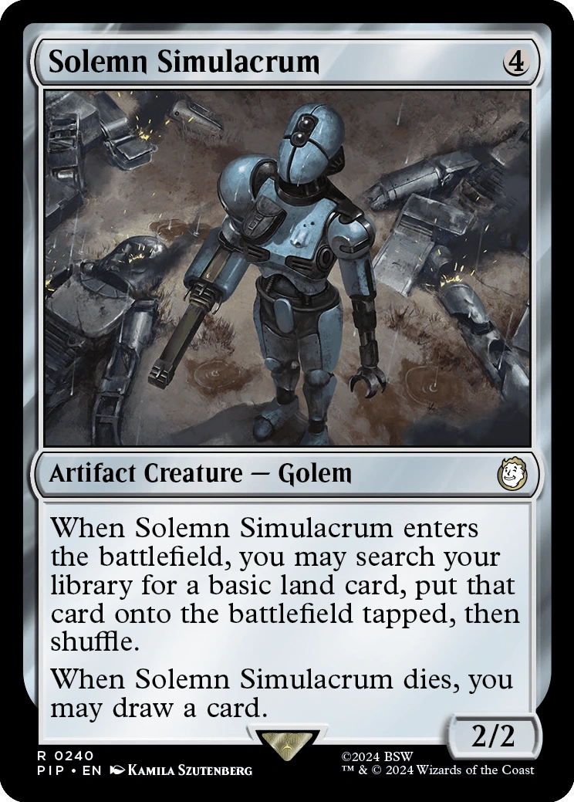
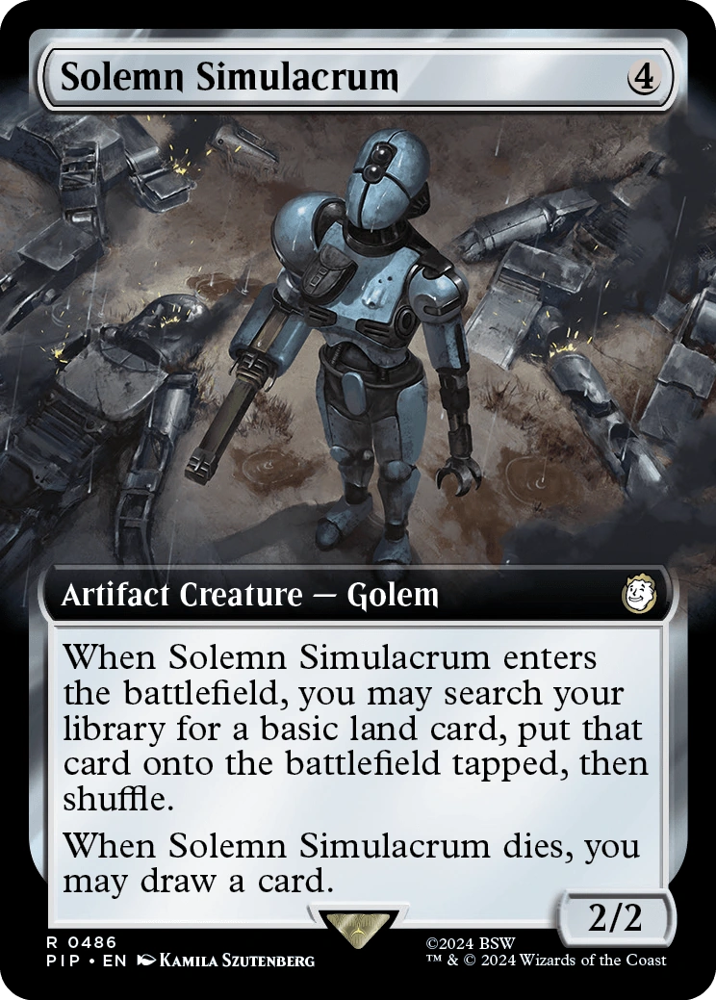
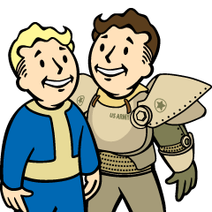

エイダ (Ada)
「私の友人たち...彼らはただの商人でした。それが、あなたのロボットたちの手によって皆殺しにされたのです。」 — エイダ、メカニストに対して
エイダ (Ada)は、2287年の連邦（コモンウェルス）に存在するロボットであり、創造主であるジャクソンのキャラバンがメカニストのロボット軍団に襲撃された際、唯一生き残った個体である。彼女は「Fallout 4」の追加コンテンツ「Automatron」に登場し、唯一の生存者（主人公）の同行者（コンパニオン）となる。
背景
エイダはジャクソンによって、彼のキャラバンの旅の仲間として作られた。彼女のベースはアサルトロンであるが、セントリーボットやプロテクトロンのパーツを組み込んだ高度な改造が施されている。
ジャクソンのグループは機械の修理と取引を専門としており、ウェイストランドを旅しながら、使用したり売却したりするためのスペアパーツが豊富にある遺跡を探して生計を立てていた。エイダは主に、キャラバンがスカベンジングのために停止した際、仲間のゾーイを助けて一時的な防御陣地を構築する役割を担っていた。彼女たちはかつて、ボストンへ向かうチャールズ川を渡る途中で、ロボット工学を専門とするレイダー集団「ラスト・デビル」に遭遇し、彼らの破壊的な手法を学んだこともある。
2287年の後半、キャラバンは連邦に平和をもたらすと称するメカニストのパッチワークのようなロボットたちから、短期間に3回もの攻撃を受けた。最初の攻撃の後、グループは連邦に留まるべきか去るべきかを議論したが、利益のために留まるという「計算されたリスク」を選択した。ジャクソンは敵ロボットから回収したパーツを使ってエイダの戦闘能力をさらに強化しようとしたが、その改造が完了する前に、ワッツ・コンシューマー・エレクトロニクス付近で最後のアタックを受けた。この襲撃によって人間の仲間たちと、他の2体のロボット（ポーターとハーツ）は命を落とし、エイダだけがその場に立ち尽くすこととなった。
性格
エイダは元々プログラムに従うだけの自動人形であったが、コズワースやKL-E-0（クリー）と同様に、仮想ルーチンを超えて人間らしい人格を発達させていった。これは、彼女がジャクソンやその同僚たちと家族のような絆を共有していたためである。ジャクソンはエイダを単なる奉仕用ロボットではなく友人として見ており、彼女のパーソナリティ・モードを恒久的に「オン」に設定していた。
この設定により、エイダはキャラバンのメンバーを単なる創造主ではなく「友人」として、さらには「家族」として慈しむようになった。メカニストのロボットによる彼らの死は、エイダの中に激しい悲しみと怒りを引き起こし、責任者への復讐心を燃え上がらせることとなった。彼女はその感情を人間のように外に出すことはできないが、自分の感情的な能力がもたらすネガティブな感情に苦しみ、いっそパーソナリティ・モードをオフにして、何も感じないロボットのままでいた方が良かったのではないかと、主人公に吐露することさえある。
プレイヤーとの相互作用
概要
| 項目 | 詳細 |
|---|---|
| 不死属性（Essential） | 常に有効 |
| 永続的な同行者 | 可能 |
| 開始クエスト | A New Threat, Headhunting, Restoring Order, Rogue Robot |
| 関連クエスト | Mechanical Menace, Rogue Robot |
| 派生ステータス | HP: 195 + ([Player Level - 10] x 5) 重量制限: 140 lbs ダメージ耐性: 25 |
| 特性 | 好戦的（Aggressive）、無鉄砲（Foolhardy）、味方を助ける（Helps Allies） |
同行者として
- エイダは、ワッツ・コンシューマー・エレクトロニクス付近でメカニストのロボットを撃退し、彼女の調査に協力することに同意すると同行可能になる（クエスト「Mechanical Menace」）。
- 彼女はドッグミート以外で唯一、主人公の行動（善行・悪行問わず）に対して常に友好的であり続けるコンパニオンである。彼女は状況に応じて助言や意見を述べるが、好感度（アフィニティ）が増減することはなく、関連するパークも存在しない。
- エイダが同行している際、彼女に話しかけるとランダムなジャンクアイテムをくれることがある。これはパーソナリティ・サブルーチンが有効な自作オートマトロン共通の特性である。
- 彼女は、所有されているアイテムを盗むように命令できる3人のコンパニオンのうちの1人である。
- 彼女はロボット作業台で改造可能な数少ないコンパニオンの一人である（他はコズワースと、特定のクエスト前のキュリー）。
- 改造によって、主人公のスキル不足を補うためのピッキングやハッキング能力を付与することも可能である。
- 解雇した際に場所を指定しなかった場合、レッドロケット・トラックストップに移動するが、その居住地の人口にはカウントされない。場所を指定した場合は、人口としてカウントされる。
- 同行中、ダイヤモンドシティのセキュリティなどは、他のベースゲームのコンパニオンに対するようなコメントを行わない。
プレイヤーの行動による影響
- クエスト「Restoring Order」でメカニストが殺害された場合、エイダが繰り返されるクエスト「Rogue Robot」の依頼者となる。
その他の反応
- Vault 111にあるネイト/ノーラの遺体へ連れて行っても、彼女は特にコメントしない。
- ベルチバードに搭乗する際、彼女は「私の体格ではベルチバードに適切に乗ることができません。目的地で合流しましょう」と言い、空の旅には同行しない。
- 彼女には疑似的な嗅覚が備わっているようで、マイアラークの生息地に近づくと「腐った魚の臭いを感知しました。あなたにとっては非常に不快でしょうね」と発言する。
- 自己破壊装置について尋ねると、ジャクソンが彼女を瓦礫にするつもりはなく、より大きな計画を持っていたため、そのような装置はインストールされていないと答える。また、パーソナリティ・サブルーチンをオフにする要求も、そのスイッチ自体が製造時に無効化されているとして拒絶する。
- Reunions完了後にボストン空港へ連れて行くと、ジャクソンのキャラバンが以前B.O.S.と遭遇したことがあり、彼らを刺激せず避けるべきだと忠告する。
クエスト中のコメント
| クエスト/場所 | 状況 | コメント |
|---|---|---|
| A New Threat - ゼネラル・アトミックス工場 | 最初は勧誘しなかった場合 | 「結局、私と一緒にゼネラル・アトミックスに行くことにしたのですか？」 |
| 同上 | 道中 | 「誰かを失うのは初めてです。この失敗は私にとって新しい経験です…」「友人が恋しいです。ライザは困った時にいつも適切な言葉をかけてくれました。」 |
| 同上 | 工場の外 | 「この工場には来たことがありませんでしたが、ジャクソンはメカニストのロボットを見つけるとすぐに私たちを遠ざけました。」 |
| 同上 | 工場内部 | 「ゼネラル・アトミックスは、オリジナルのロボット作業台プロトタイプを保有していた会社です。」「メカニストがどこにいるか、何か証拠が見つかるといいのですが。」 |
| 同上 | 最初のレーダービーコン入手 | 「このビーコンが、メカニストを追跡するために必要な唯一の断片であることを願います。」 |
| 同上 | 居住地にロボット作業台を設置 | 「ロボット作業台は強力なツールです。単純な思考の持ち主でも複雑なロボットを作ることができます。」 |
| 同上 | レーダービーコンをエイダにインストール | 「メカニストの才能には疑いの余地がありません。私のシステムはこのレーダービーコンと100%互換性があります。ジャクソンでさえ達成できなかったことです。」 |
| Headhunting | M-SATモジュールをインストール | 「全システム正常。また一つ、改造が成功しました。」 |
| Restoring Order - ロブコ・セールス＆サービスセンター | 最終決戦前 | 「最後の対決が待っています。二人とも生きてそれを見届けられることを願います。」 |
| 同上 | メカニストの扉が開くのを見て | 「この扉には興味をそそられます。ロボットにとって、それは『詩的な動き』のようです。」 |
| 同上 | アイボットのメッセンジャーに遭遇 | 「アイボットは、あまり強力なメッセンジャーではありませんね。」 |
| 同上 | ロボブレインの研究施設へ進入 | 「ロブコ・セールス＆サービスは、軍事施設としては完璧に目立たない場所のようです。」 |
| 同上 | ロボットの猛攻を凌いだ後 | 「見事な生存戦術でした。」 |
| 同上 | メカニストの隠れ家の制御センター | 「あのロボブレインたちが、なぜ一人でこの施設を維持できたのかを物語っています。見事な改造です。」 |
| 同上 | メカニストに「真の脅威はお前のロボットだ」と告げる | 「彼らは罪のない命を奪いました。私の友人たち…彼らはただの商人でした。それが、あなたのロボットたちの手によって皆殺しにされたのです。」 |
メモ
主人公と出会った際のエイダのデフォルト構成は、アサルトロンの頭部（工場用ヘッドアーマー）、アサルトロンの胴体（前方・後方工場用ストレージアーマー）、アサルトロンの左腕（工場用アームアーマーとアサルトロン・クロウ）、セントリーボットの右腕（工場用アームアーマーとレーザー）、そしてプロテクトロンの脚部（アーマーなし）となっており、全体がアクア色のペイントで統一されている。
既知の不具合
- クエスト「A New Threat」にて、ロボット作業台でエイダにレーダービーコンを設置しようとしても、脚の改造オプションしか表示されず進行不能になる場合がある。エイダを攻撃してダウン状態（crippled）にすることで解消することがある。
- コマンドモードでアイテムを拾わせることで、重量制限を無視して無限にアイテムを持たせることができる場合がある。
- ターミナルのハッキングを命じても、反応せずに無視されることがある。ゲームの再起動で直ることが多い。
- 同行中、エイダがプレイヤーに向かって繰り返し後退したり衝突したりすることがある。
- 突然姿を消してしまうことがある。新しいコンパニオンを雇うことで、指定した場所に送り返され、再会できる。
- メカニストと対面した際、エイダがその場にいても、後で「彼女（メカニスト）は何と言っていた？」とプレイヤーに尋ねるなど、その場にいなかったかのような言動をすることがある。
舞台裏
- エイダの声はレイチェル・ロビンソンが担当しており、彼女はロボット作業台で作れる「女性」ボイスのタイプも担当している。日本語版では梶山はるかが吹き替えを担当している。
- エイダの名前は、実在の数学者でありコンピュータ科学の先駆者であるエイダ・ラブレス (Ada Lovelace)に由来している。彼女はイージーシティ・ダウンズにいる別のアサルトロン「レディ・ラブレス」ともその名を共有している。
- エイダの台詞には、ポップカルチャーやSFへのオマージュが含まれている：
- 戦闘開始時の「抵抗は無意味です (resistance is futile)」は、「スタートレック」のボーグの台詞。
- ターミナル使用後の「キーボードを使うなんて、古風ですね (Using a keyboard. How quaint.)」は、「スタートレックIV 故郷への長い道」のスコットの台詞。
- 「Restoring Order」にて扉について述べる「詩的な動き (Poetry in motion)」は、1960年のジョニー・ティロットソンのヒット曲。
- 学校のロケーションで発する「肉を食べないなら、どうしてプリンが食べられるんですか？ (If you don't eat your meat, how can you have any pudding?)」は、ピンク・フロイドの「Another Brick In The Wall, Part 2」の歌詞。
ギャラリー
デフォルトの外見 (Automatron)

Automatron トレーラーでのエイダ

Settler's Guide Book (TRPG) の挿絵

Magic: The Gathering カードイラスト

MTG 拡張アート版

クエスト「Paving the Way」アイコン
「Automatron」の物語を動かす中心人物であり、連邦におけるロボットの「人間性」を象徴する存在です。
彼女の最も切ない点は、家族を失った悲しみをプログラムとしてではなく、一個の「人格」として真に感じてしまっていることでしょう。
「いっそ何も感じない方が良かった」という言葉は、感情を持つことの代償を重く物語っています。
一方で、改造によって見た目が全く別物になっても、その献身的な態度は変わりません。
主人公がどんな道を選ぼうとも、背中を預けられる数少ない「鉄の友人」として、彼女は連邦の荒野を共に歩んでくれます。
This article was created by translating and editing Ada from Nukapedia: The Fallout Wiki.
Licensed under the Creative Commons Attribution-Share Alike License (CC BY-SA 3.0).
> COMMENTS